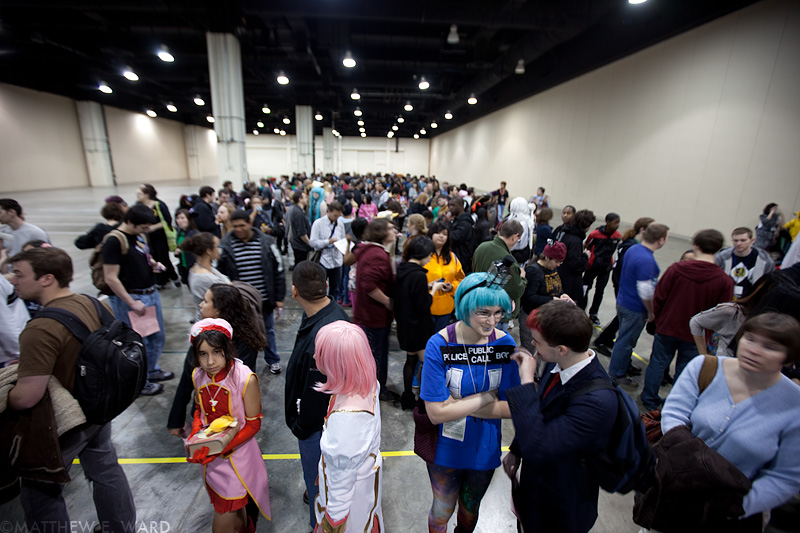
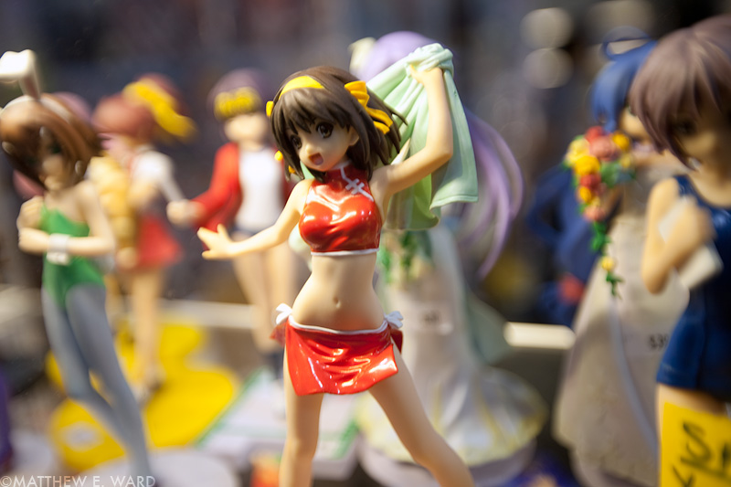

KATSUCON 18
2012.2.18
I am a fit young man of 26. I emerged from the registration queue broken, battered, diseased, and starved of sunshine and oxygen. It was actually a brilliant, unseasonably mild winter's afternoon in the D of C, and I with my eternally good-sport mother—who'd not only weathered a menopausal hot-flash during the queue, but helped slog around my photo equipment and anime swag, all while being slightly less amused being surrounded by otaku than the DC lawyers she used to work with—caught some rays outside with tens of other decompressing cosplayers and muggles, some of whom were in packs, others couples (there were very few loaners), before reentering the morbidly pregnant beehive that was the 18th annual Katsucon. Oh, if only I had clones...
As conventions go, I'm worse than a novice. RIT's Toracon was small enough for one person to do in one day. (Being an RIT Anime Club member, I was of course pre-registered.) I'd pop up early in the morning, get my shopping out of the way, and spend the rest of the day shooting (with a camera, mind you) cosplayers. I'd revel in the camaraderie of mutual agenda and the kinship of tastes, where I wouldn't be afraid to make an obscure pop-cultural reference, only to leave it lying on the floor like a pile of rancid feces, and I to slink off like the embarrassed dog who put it there. But seriously, relative to those I clubbed with back in the day, I'm not pure.
There are no anime nerds in my circle of close friends, nor did I grow up with any, and I'm still learning to be 'open' with it. It is a guilty pleasure, because I like to think I have good taste, and a lot of the anime and manga I've enjoyed over the years is not only terribly acted and written, but also full of useless melodrama. Compared to the work of artists whom I admire and aspire to emulate, it's trash, and I've struggled to find a good explanation to my college friends with their arts degrees as to why I'd waste my time pining over such meritless oriental kitsch. When has a conversation turned from Sekirei to the latest David Simon creation? (Footnote #1) My iPhone's lockscreen is a picture of Genshiken character Saki Kasukabe, with her big, beautiful brown eyes full of otaku-hatred, giving me guilt. But the pleasure, however guilty, is still a pleasure, or else Saki wouldn't be on my phone. Why should fun ever be burdened by merit, lest it betray its reason for being? And I planned to use this sunny occasion to surfeit my anxious vessel on this odd love of mine, and have fun until I exploded in a hail of pocky, gashapons, and carbonated guarana.
This hopeful anticipation wore off in the two-hours I stood in line to be registered for just one day. Now, having watched Genshiken years before, I should've known what I was in for, as one famous sequence made a lot out of the excruciating anticipation in queuing up for ComiFes, the annual doujinshi market around which the characters orchestrated their lives. I stood in line for eight hours for one of the first iPhone 4's, and at the end, I had a shiny exclusive piece of something to show for it, plus a complimentary rock-star H-J from Apple. The Katsucon registration staff, who were in worse shape because this was their whole day, gave me a daypass, and consumption.
I had never done a properly big convention before, and mistake #1 was not taking advantage of online pre-reg, which would've set me up for the whole weekend. "But I only need one day" I thought to myself. Mistake #2. Catastrophic mistake at that. With only a couple hours of good daylight left, and a few more hours before the convention withered into the night, I wanted to be everywhere at once. Needless to say, this. Is. Not. Possible. I was there to serve two diametrically opposed agendas: one, to record the event to the best of my artistic and directorial powers, using my camera to snatch the weird, the wild, the human, and the furry, at their most noble, and then their most disarmed. The second agenda, as a consumer of Japanese pop culture, was to seek out the most rare and interesting booty I could find within my budget, which I could then show off to other geeks before taking home, and, exultant in my mania, exacting my most repressed and unrequited designs, pig out on comfort food and more anime, and finally retire.
Oh yes, I almost forgot the third agenda, aforementioned and in concert with the two others, probably the most important one of all, we'll call it the Golden Agenda: have fun. There is just too much to do and see in one day at a large convention, even with only one agenda.
Here is how the day unraveled, in one sentence: Having shot a few unimaginative group portraits outside the convention center, in the only good light I'd see for the rest of the day, I, with my 35-lb camera bag, the strap of my Canon 5D rubbing the back of my sweaty neck raw, and lenses hurriedly stuffed into my coat pockets, I took forty-seven strides—in the cavernous Gaylord National Convention Center, equivalent to the length of a vole's taint—and found the Merchant's Hall, where I did not leave until the night was over.
I had the opportunity to be extremely irresponsible with what little money I had saved. Was I going to buy one big thing, or a bunch of small things? (My main 'thing' being statues and figurines.) Or maybe even an artbook or two? The first one I picked up was a headphone fetish collection: a treasury of barely-legal bishoujo wearing the latest headgear from the likes of Audio-Technica, Beyerdynamic, Ultimate Ears, and Sennheiser. For politeness sake I made my glances quick, but when I saw a Murata-styled bowl-cut, brown-eyed sprite wearing my headphones, the Sennheiser HD600, it fried my melon. If this blog had a state flag, then surely, it would be a picture of a cyberpunk Japanese high school girl donning the Sennheiser Orpheus. (Or if 'steam-punk' then the Grado RS-1. Wood is good.)
The Katsucon Merchant's Hall was a cornucopia stuffed with a matryoshka doll inside of a Turduckin spinning on the third arm of the galaxy pendant on Orion's belt in the movie Men In Black. I literally saw everything I ever wanted since I began this hobby, and a few more things on top of that. There were no less than two different merchants selling a full war-chest of hand-forged, display and battle-ready medieval & feudal-era cutlery. Standard fare and rare items alike were out in satisfyingly mass quantities: lascivious bedsheets and dakimakura (body-length pillows) each printed with a crown-to-toe spread of popular characters from gaming and anime, to suit the tastes of those in need of a more tangible presence worth spooning, apart from idle hands alone. Towers of wallscrolls and posters, with numerous gems the likes of which even eBay couldn't match, and enough breathtakingly cute PVC figures to choke the Pacific trash gyre in a titanic belch-bubble of pigmented polymers. That all may seem like a load of free-floating hyperbole (and you may be right,) but that's what the merchant's hall of a major pop-culture convention is, lots of retailers, embassies and NGO's crammed into one room, vying for attention; in other words an anime mall.
Unfortunately my involvement in this plastic pogrom had a catastrophic effect on my agenda as a photographer, chilling it indefinitely. The Merchant's Hall was dimly lit, and although I had a flash, and was in up over my eyeballs in the most diverse and creative display of cosplay I've seen in the flesh, I was too busy looking for ways to spend money. No longer looking for what I really wanted (as I couldn't afford it anyway), I was in search of a bronze star, a simple day's memento, and as horny as a nematode ready to bifurcate itself in lieu of a mate. If I had done my job, there would be a Katsucon 18 heading in the 'Events' section of my photography wing. As a shooting assignment then, my grade for the day is an F-, for getting my head stuck in Miina Miyafuji's undershirt.
I am now going to rest, and then go to the art galleries downtown to clear my head. I will not make the same mistake again, when Otakon rolls around this summer.
1 The entire basis of my admiration for Japanese animation is that its content is more mature, the plots more complex, and relative to most of the material coming from the US, post Disney and Warner Bros. Golden Era, the Japanese just seemed to take the artform more seriously. They aren't afraid to challenge the hero with impossibly high stakes. They aren't afraid to challenge an audience with high-minded concepts, or images that would fricassee the brains of a poor Puritanical American, or irony, or exploring the darkness of the human heart. It is why I am so critical of the stuff that doesn't work, because the stuff that did work had irreversibly raised my standards. And what can I say? I love big tits. (Although the size of a character's tits is inversely related to the quality of storytelling, and they've only been getting bigger and bouncier over the years. C'est la guerre.)